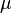

MENSAJE
Material instruccional computarizado para la enseñanza y aprendizaje teórico-práctico de la dinámica de los fluidos en la asignatura mecánica de los fluidos del PNF de la especialidad ingeniería de materiales industriales de Universidad Politécnica de I.U.T.Valencia.
El Número de Reynolds relaciona la densidad, viscosidad,
velocidad y dimensión típica de un flujo en una
expresión adimensional, que interviene en númerosos problemas
de dinámica de fluidos. Dicho número o combinación
adimensional aparece en muchos casos relacionado con el hecho de que
el flujo pueda considerarse laminar (número de Reynolds
pequeño) o turbulento (número de Reynolds grande).
Para un fluido que circula por el interior de una tubería
circular recta, el Número de Reynolds viene dado por:
Donde:
= densidad del fluido
= velocidad característica del fluido
= diámetro de la tubería a través de la cual circula el fluido o longitud característica del sistema
 = viscosidad dinámica del fluido
= viscosidad cinemática del fluido
Ejercicios
Indique La Respuesta Correcta
Soluciones / Pregunta N° 5) A & B Respectivamente
Pérdida de Energias por tuberías / Concepto
A medida que un fluido fluye por un conducto, tubo o algún otro dispositivo, ocurren pérdidas de energía debido a la fricción que hay entre el liquido y la pared de la tubería; tales energías traen como resultado una disminución de la presión entre dos puntos del sistema de flujo.
Una de las formulas más exctas para el cálculo hidraulico es la ecuación de Darcy-Weisbach.
La formula original es la siguiente:
El coeficiente de fricción f es función del número de Reynolds (Re) y del coeficiente de rugosidad o rugosidad relativa de las paredes de la tubería (Er), en caso de que el fluido sea turbulento.
si el fluido es Laminar el coeficiente de fricción f se calcula a partir de f=64/Re.
Pérdida de Energias por tuberías / Tablas
La rugosidad absoluta de las tuberías está, de igual manera, tabulada, para los diferentes
materiales, la rugosidad absoluta será:
Pérdida de Energias por tuberías / Graficas
En la ecuación de Darcy-Weisbach aparece el término que representa el factor de fricción de Darcy, conocido también como coeficiente de fricción. El cálculo de este coeficiente no es inmediato y no existe una única fórmula para calcularlo en todas las situaciones posibles.
Se pueden distinguir dos situaciones diferentes, el caso en que el flujo sea laminar y el caso en que el flujo sea turbulento. En el caso de flujo laminar se usa una de las expresiones de la ecuación de Poiseuille; en el caso de flujo turbulento se puede usar la ecuación de Colebrook-White además de algunas otras cómo ecuación de Barr, ecuación de Miller, ecuación de Haaland.
En el caso de flujo laminar el factor de fricción depende únicamente del número de Reynolds. Para flujo turbulento, el factor de fricción depende tanto del número de Reynolds como de la rugosidad relativa de la tubería, por eso en este caso se representa mediante una familia de curvas, una para cada valor del parámetro k/D, donde k es el valor de la rugosidad absoluta, es decir la longitud (habitualmente en milímetros) de la rugosidad directamente medible en la tubería.
En la siguiente imagen se puede observar el aspecto del diagrama de Moody.
Pérdida de Energias por tuberías / Ejercicios
Pérdida de Energias por tuberías / Soluciones
Solución Ejercicio N° 1.
Solución Ejercicio N° 2.
Solución Ejercicio N° 3.
Pérdida de Energias Menores / Concepto
La pérdida de energia con proporcionalidad a la carga de la velocidad de fluido, conforme pasa por un codo, expansión o contracción de la unión del fluido o por una válvula
Por lo general los valores se representan a traves de la siguiente expresión:

Donde
K: Es el coeficiente de la resistencia de entrada del fluido a la tubería o salida de un fluido de una tubería o depósito estático
Velocidad promedio del flujo
Pérdida de Energias Menores / Tablas
1)- Coeficiente de resistencia de entrada de fluido a tubería
Mecanica de Los Fluidos Robert Moot 6ta Edición - P293.
2)- Coeficiente de resistencia de salida de un fluido de una tubería a un depósito estático

Mecanica de Los Fluidos Robert Moot 6ta Edición - P284.
3)- Resistencia válvulas y acoplamientos expresados en Le/D
Mecanica de Los Fluidos Robert Moot 6ta Edición - P297.
Pérdida de Energias Menores / Ejercicios
Pérdida de Energias Menores / Soluciones
1)- Solución Ejercicio N° 1
Bernoulli / Concepto
Describe el comportamiento de un fluido moviéndose a lo largo de una tubería y tiene la forma siguiente:
Donde:
V = velocidad del fluido en la sección considerada.
P = presión a lo largo de la línea de corriente.
g = aceleración gravitatoria
z = altura en la dirección de la gravedad desde una cota de referencia.
= es el peso específico
= Pérdidas totales de energia debido a la fricción en la tubería y Pérdidas menores.
= Energia que se agrega al fluido con un dispositivo mecanico como una bomba.
Nota: Los subíndices 1 y 2 indican si los valores están dados para el comienzo o el final del volumen de control respectivamente.
Bernoulli / Ejercicios
Bernoulli / Soluciones
1)- Solución Ejercicio N° 1